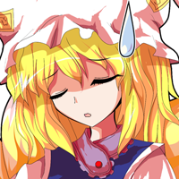

第０２０回 弾吐き弾
 |
今回学ぶのは弾吐き弾だ。
弾から弾が出る弾のことを指している。
弾吐き弾という呼び方も、此処の講座での暫定的な呼び方で一般的ではない。
そこは注意してくれ。
|
 |
弾から弾が出る弾幕っていうのは、ありそうで意外と少ないですよね。
小型ビットみたいなのが弾を出すっていうのはありますけれど。
|
 |
どちらにせよ、この弾の作り方を憶えれば弾幕のバリエーションがさらに増える。
加速弾やカーブ弾よりも広域で派手な弾幕が作りやすい。
是非憶えてほしい内容ではある･･････が、結構ややこしい。
まずはスクリプトを開こう。
『study020.txt』だ。
|
〜 前略 〜
task mainTask {
loop(60) {yield;}
CreateShotA("vomit", GetX, GetY, 0);
SetShotDataA("vomit", 0, 3, GetAngleToPlayer-20, 0, 0, 0, RED01);
let vomited = 1;
CreateShotA(vomited, 0, 0, 0);
SetShotDirectionType(PLAYER);
SetShotDataA(vomited, 0, 2, 0, 0, 0, 0, RED11);
SetShotDirectionType(ABSOLUTE);
AddShot(30, "vomit", vomited, 0);
FireShot("vomit");
loop(180) {yield;}
loop {
let shotTime = 90;
loop(30) {
CreateShotA("vomit", GetX, GetY, 0);
SetShotDataA("vomit", 0, rand(2, 3), GetAngleToPlayer+rand(-45, 45), 0, 0, 0, RED01);
let vomited = 1;
CreateShotA(vomited, 0, 0, 0);
SetShotDirectionType(PLAYER);
SetShotDataA(vomited, 0, 1, 0, 0, 0, 0, RED11);
SetShotDirectionType(ABSOLUTE);
AddShot(shotTime, "vomit", vomited, 0);
FireShot("vomit");
shotTime -= 2;
loop(2) {yield;}
}
loop(120) {yield;}
}
}
}
|
弾幕部分だけでも結構長いスクリプトになっているな。
というのも弾吐き弾を１つ作るだけでも結構手順が面倒なんだ。
では、最初の部分から見ていくとするか。
|
|
最初の２行は普通のCreateShotAとSetShotDataAですね。
引数を見る限り加速もカーブもしない普通の弾みたいですけど。
|
|
そうだな、"vomit" (英：吐く) と名付けた弾はCreateShot01で作れる普通の弾だ。
発射角度が自機狙いからあえて外して撃っている以外はごく普通だな。
が、最終的にこの"vomit"に弾を撃たせるからCreateShotAの方を使っている。
その次にあるvomitedと付けた弾を撃たせるために。
|
|
vomitedの方は名前が文字列じゃなくて変数なんですね。
|
|
CreateShotAで弾の名前を付けるとき、今回のように変数の名前を使う方法もある。
変数の中身が参照されるから内部的に数値なんだが、こういう書き方なら
スクリプトを見てわかりやすい。
文字列を使いたくなかったらこのように書いてもいい。
そうそう、変数名にaddを使わないように。
予約語だからエラーが出てしまう。
原因に気づきにくいエラーだから注意しよう。
|
 |
vomitedの方も加速、カーブ共にしないんですね。
でもSetShotDirectionTypeを使って自機狙い基準に設定しているんですね。
今まで通りGetAngleToPlayerじゃダメなんでしょうか？
|
|
弾から自機狙いの弾を出したい場合はこう書かないとダメ。
何故ならGetAngleToPlayerはボスから自機への角度を取得する関数だからだ。
だから弾が出される瞬間の弾の位置から自機への角度を取得するワケではない。
そこでSetShotDirectionTypeをPLAYERに変えて撃つようにしている。
その直後に再びABSOLUTEに戻しているけれど。
|
|
『ボスからの』角度っていうところが重要なんですね。
それで、vomitedの設定が終わった後はAddShot･･････
これは初めて見る関数ですね。
|
|
これが弾に弾を持たせるときに使う関数だな。
引数は見ての通り４つ。
まず１つめの引数について説明しよう。
第１引数は弾を出すまでの時間を設定するんだ。
弾を吐く側の弾が発射されてから、何フレーム経過してから弾を撃つかの時間だな。
|
 |
今回の場合は３０になっていますから、弾を吐く側の弾･･････
えっと、vomitの方ですね。
vomitが撃たれてから３０フレーム経過すると、vomitからvomitedが撃たれるんですね。
|
|
そして吐く弾、吐かれる弾を設定するのが第２，３引数になる。
第２引数が吐く弾で、第３引数が吐かれる弾になるんだ。
どっちがどっちか間違えないように。
|
|
第４引数は０になっていますけれど、これはなんでしょう？
|
|  |
実は今回の例だと意味を成さない引数なんだ。
だからとりあえず０にしている。
どういう意味か知りたい方は弾幕風付属のヘルプを見てくれ。
|
|
これで弾を吐く弾の完成ですね！
ちなみに１つの弾から複数の弾を撃たせることもできるんでしょうか？
|
|
勿論可能だ。
AddShotを１つの弾に何回も使えばできる。
その際はループをうまく使うと良いだろう。
ちなみにSetShotKillTimeという関数を使って吐く側の弾を消して、
炸裂弾のような弾幕を作ることも可能だ。
このあたりの応用については、弾幕風付属のヘルプにあるサンプルページを見てほしい。
ただこの講座のスクリプトと比べるとかなり難解だから大変だと思う。
|
|
見たところwhileループが３重になっていますから処理の流れを読むのが大変です･･････
幸いコメントアウトに細かく説明がされてますから、それをヒントにできますね。
|
|
あとそうだ。
AddShot関数を使うとき、吐く側と吐かれる側の弾の両方が『文字列の名前』だと、
正常に動作しないみたいなんだ。
どちらか片方、あるいは両方が変数 (実質数値だが) なら大丈夫なんだが･･････
勘違いだったら申し訳ないが、とにかく両方文字列にするのはやめよう。
|
|
あとはいつもの自習枠ですね。
今回は何かヒントはないんでしょうか？
|
|
shotTimeという変数に注目してほしい。
これをうまく使うことで、１つ１つの弾吐き弾が出されたタイミングが異なるのに
弾を吐く瞬間は同時に吐くようにすることができる。
このような工夫をすることで、弾が吐かれるインパクトをより強調できると思う。
こういう使い方もあることを憶えてくれ。
|
|
これで加速弾に停止弾、カーブ弾と弾吐き弾を作れるようになったワケですね！
もう大体の弾幕を作れる基礎ができたんじゃないですかね？
|
|
でもまだこれだけでは実現できない特殊な弾があったりするわ。
例えば真下に撃たれた弾と自機のY座標が一致したとき、弾が直角に曲がったり
真横に弾を撃つような弾を作りたいとする。
自機の位置は絶えず変わるから、どのタイミングで弾と自機のY座標が一致するのか
予測することはできないわ。
つまり前もって何時弾を出すのか正しく設定できないのよ。
|
|
そんな特殊な弾とかもあるんですね〜
そういった弾も弾幕風で作ることができるんでしょうか？
|
 |
方法はあるわ。
弾１つ１つに毎フレーム自機の位置と弾の位置を比較させれば実現できるわ。
でもそういった判別はCreateShotAなどでは無理なの。
『オブジェクト弾』というモノを学ぶ必要があるわ。
|
|
そのオブジェクト弾というのがあればもっと特殊な弾が作れるんですね！
|
|
ええ。
これまでの基本的な特殊弾も表現できるから、人によってはCreateShotAより
オブジェクト弾の方ばかり使うこともあるでしょう。
ここの作者もその一人だったりするけれど。
とにかく、オブジェクト弾を習うときが来るまで楽しみにしててね。
ではまた次の講座で会いましょう。
|